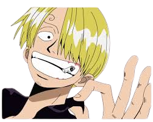
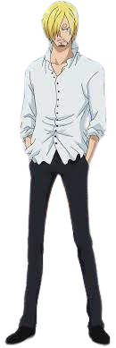
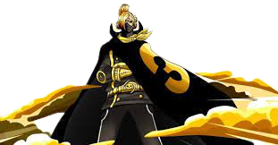

Sanji vinsmoke
conhecendo o personagem
  Sanji é um dos melhores lutadores dos Piratas do Chapéu de Palha, mas o seu papel na tripulação é de cozinheiro. Junto com Luffy e Zoro, Sanji é classificado como um membro do Trio Monstro, que são os três membros mais fortes da tripulação. Depois da batalha em Enies Lobby, Sanji ganhou sua primeira recompensa com o valor de 77,000,000 de berries. Já que ele prefere usar suas mãos apenas para cozinhar, Sanji só luta usando golpes de chute com suas pernas. Depois de aperfeiçoar seu estilo de luta, ele criou o Diable Jambe, uma técnica que cobre sua perna com chamas para aumentar a força dos chutes. Na sua última atualização, a recompensa de Sanji subiu para 1,032,000,000 de berries.